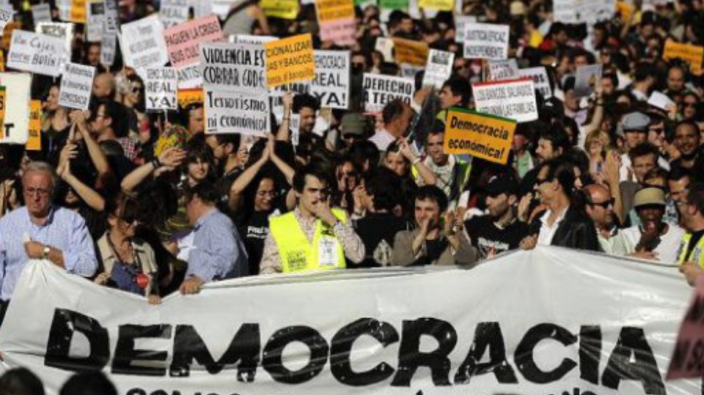
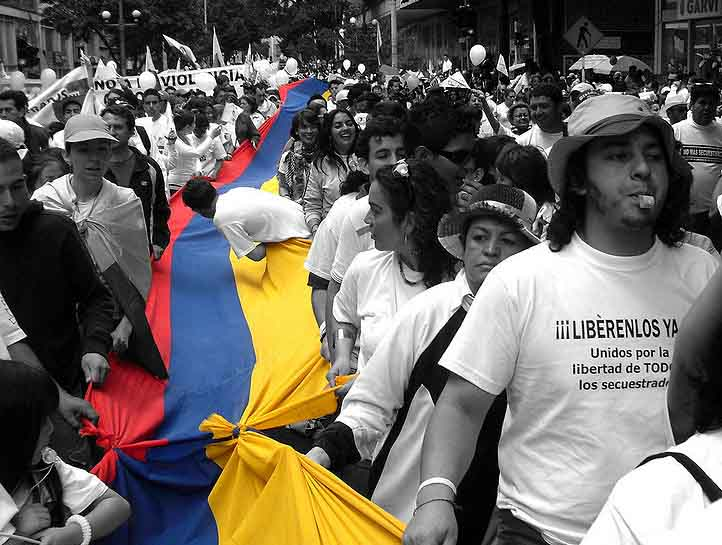

El gobierno escolar: administra y orienta en la institución educativa donde se basa en normas y funciones dirigidos por el rector, representantes de los docentes, docentes, representantes de los padres, un representante del grado 11, personero, etc… Para gestionar las actividades y recursos para tener un colegio mejorado.
Gobierno Escolar es una forma de preparación para la convivencia democrática, por medio de la participación de todos los estamentos de la comunidad educativa en la organización y funcionamiento del Proyecto Educativo Institucional (PEI).
El gobierno escolar es el encargado de velar por los derechos y deberes de la comunidad educativa, Es la mayor instancia de participación y toma de decisiones , el gobierno escolar es el mecanismo para garantizar la representación de toda la comunidad educativa.
La democracia escolar: se trata de que todos los estudiantes como una sociedad democrática escolar tenemos tomar decisiones y participar para representar nuestra institución educativa ya que es una forma de prepararnos a la convivencia democrática.
La democracia escolar es la elección de los estudiantes de las diferentes instituciones educativas cuya tarea básica es representar los intereses de toda comunidad educativa, la democracia en la escuela es un valor social que hay que promover decididamente contadas sus consecuencias
Al ser una institución compartida entre adultos y menores es obligación garantizar el aprendizaje
¿Sus propósitos?
Sus propósitos son que en todos los colegios seamos capaces de crear, regular y dirigir acciones educativas mediante procesos de participación de la comunidad, Cómo crear pequeños estados al interior de las escuelas que permiten a los estudiantes como nosotros vivenciar las posibilidades sociales frente a una vida democrática activa, también se aprenda a dialogar para lograr acuerdos o respetar las opiniones de los demás y impulsar cambios revolucionarios. Gracias a el podemos tener voz y voto, aportar desde temprana edad a la sociedad educativa y ser responsables con ello.
¿Por qué es importante participar en el?
Porque como alumnos la participación es como una oportunidad para dar ideas y ayudar, permite incluirnos como protagonistas en un proceso de enseñanza o aprendizaje, compartiendo junto con los docentes la toma de decisiones en los asuntos escolares y si no participamos o no nos dejan participar en el IDEM podría pasar lo siguiente:
1.Contradicción y violación con lo siguiente escrito en el manual de convivencia:
ARTÍCULO 18º: DERECHOS Y DEBERES DE LOS ESTUDIANTES
DERECHO: 6. Participación, e inclusión en el PEI y en la vida social DEBERES:
• Asistir y participar en las actividades programadas para su formación integral.
• Aportar ideas y trabajar conjuntamente para el mejoramiento institucional.
• Respetar las reglas establecidas para la elección de los representantes estudiantiles.
2. Ser un colegio vulnerable y de mala calidad:
No tendríamos mejoras ni gestiones en el colegio, haciendo que pierda la calidad de ser un buen colegio con beneficios y ventajas para los estudiantes.
3. No habría formación de voz y voto para los estudiantes:
No entenderíamos para que sirve la democracia escolar, quien los dirige, la participación, el voto, expresar nuestras propias ideas y nos daría una mal formamento para ser un ciudadano y votar en el país en un futuro.
INFORME#2:
LA DEMOCRACIA MODERNA
¿Qué es?
La democracia moderna es una forma de organización social y política donde el poder viene de los ciudadanos. La democracia moderna es una forma de gobierno en las que todo un conjunto de personas toman decisiones ante la ley con igualdad a través de mecanismos de participación directa o indirecta que otorgan legitimidad a sus representantes. También es una forma de convivencia social donde los miembros son libres e iguales y donde las relaciones sociales se forman de acuerdo a mecanismos contractuales.
El centro de decisión política de la democracia moderna actúa para “imponer” su decisión, considerando la pluralidad y complejidad sociopolítica, usando las herramientas de la política como el diálogo, la negociación, el consenso y el acuerdo, luego de diferencias, críticas y rechazos.

¿Porqué es importante?
Es importante porque nosotros como ciudadanos tenemos el derecho a la toma decisiones para nuestro país, pero más importante para nosotros mismos, con esto nos referimos a que todos nosotros tenemos el poder como una sociedad democrática para defender y reclamar esos derechos ya que sin la democracia moderna nos estarían vulnerando esa toma de decisiones afectando a nuestra comodidad, paz y a nuestros derechos humanos.
Puntos importantes sobre la democracia moderna:
1- Libertad y derechos
2- Participación
3- Responsabilidad y honestidad
4- Paz y un entorno estable
DERECHOS HUMANOS
¿Qué es?
Los derechos humanos son partes inherentes de todos nosotros, independientemente de nuestra nacionalidad, sexo, origen nacional o étnico, color, religión, idioma, o cualquier otra condición...
Merecemos que estos sean cumplidos y respetados ya que para poder vivir en comunidad con los demás y en total armonía todos debemos tener derechos igualitarios con los cuales vivir y así formar un mundo en paz
¿Cómo se vulneran los derechos humanos?
Estos se vulneran cuando hay: abusos, robos, los agravios verbales contra las personas, los golpes, el maltrato en todos sus ámbitos. Con esto nos damos de cuenta que hoy en día los derechos humanos son violados constantemente y de muchas maneras.
Derechos Generales
- Derecho a la vida y a la calidad de vida y un ambiente sano.
-Derecho a la integridad personal.
-Derecho a la rehabilitación y la resocialización.
-Derecho a la libertad y seguridad personal.
-Derecho a tener una familia y a no ser separado de ella.
DERECHOS HUMANOS EN COLOMBIA
En Colombia, los derechos humanos han sido una preocupación constante debido a los múltiples conflictos armados, social, políticos y económicos que han afectado al país. Sin embargo, en las últimas décadas se han hecho importantes avances en la protección de los derechos y libertades fundamentales de la ciudadanía.
Entre los derechos humanos más vulnerados en Colombia se encuentran el derecho a la vida, la integridad personal, la libertad de expresión, asociación y reunión, la justicia y el acceso a la atención en salud.
A pesar de los desafíos, en los últimos años se han dado importantes avances en la protección de los derechos humanos en Colombia. Entre las iniciativas más destacadas se encuentran:
- El acuerdo de paz con las FARC, que busca poner fin a décadas de conflicto armado y mejorar la situación de los derechos humanos en el país.
- La creación de la Unidad de Búsqueda de Personas dadas por Desaparecidas, que tiene como objetivo encontrar a las víctimas del conflicto armado y esclarecer la verdad sobre sus desapariciones.
Otros avances en la protección de los derechos humanos en Colombia incluyen:
- La creación de la Unidad de Restitución de Tierras, que busca devolver las tierras a las víctimas del conflicto armado y reparar los daños causados por el desplazamiento forzado.
- La adopción de la Ley de Victimización, que reconoce los derechos de las víctimas del conflicto armado y prevé medidas de reparación y de lucha contra la impunidad.

NUESTRA REALIDAD:
- Amnistía denuncia el doble rasero en la defensa de los derechos humanos
“Los estados no pueden criticar las violaciones de derechos humanos primero y luego consentir abusos similares en otros países solamente por proteger sus propios intereses. Es inadmisible y erosiona los fundamentos del sistema universal de derechos humanos”, afirma la secretaria general de la organización, Agnès Callamard.
- “No nos escuchan”: defensora de Derechos Humanos para el MinDefensa hace llamado al Gobierno Petro por muerte de oficiales
Como respuesta de la situación presentada entre el pasado jueves y viernes en San Vicente del Caguán, en donde una manifestación se salió de las manos y un policía perdió la vida y otros 70 resultaron secuestrados a manos de la comunidad, la defensora de Derechos Humanos para el Ministerio de Defensa, Elizabeth García, hizo un llamado al Gobierno para atender necesidades que no son escuchadas.
“Quiero alzar mi voz, una alegría porque ya hoy están nuestros policías en libertad, sanos y salvos. Gracias a Dios pueden compartir con sus familias y gracias a la labor que se hizo hoy allá en el Caguán”, dijo García.
- CIDH a El Salvador: "urge" respetar los derechos humanos
"La CIDH urge al Estado respetar los derechos humanos en la adopción de las medidas para la prevención, control y respuesta a la criminalidad, así como a investigar, procesar y sancionar las actividades delictivas", indicó el organismo en un comunicado.
- CAF y la Defensoría del Pueblo trabajarán en conjunto para fortalecer la capacidad tecnológica en favor de los derechos humanos en Colombia
Mediante la firma de un Memorando de Entendimiento ambas instituciones establecerán un marco de colaboración que desarrolle programas y proyectos que fortalezcan el cumplimiento de los derechos humanos en el país.
Consolidar la paz en Colombia exige detener las expresiones de violencia
En el último informe sobre la Misión de Verificación de la ONU en Colombia, que abarca el período del 27 de diciembre de 2022 al 26 de marzo de 2023, el Secretario General recibe con optimismo los avances en el proceso de paz, y elogia “los esfuerzos adicionales en curso para ampliar el alcance de la paz a través del diálogo”.
- Presentación del Informe Anual del Alto Comisionado sobre la situación de Derechos Humanos en Colombia, Medellín 28 de marzo
El informe se refiere a la situación de derechos humanos en Colombia del 1 de enero al 31 de diciembre 2022, haciendo énfasis en el impacto de la violencia territorial en los derechos humanos. Valora, además, el estado de implementación del Acuerdo de paz en materia de derechos humas y revisa las propuestas y reformas del Gobierno en materia de derechos humanos – incluyendo la Política de Paz Total – y el nuevo enfoque de seguridad humana.
- OEI se suma a la conmemoración del Día de la Memoria y Solidaridad con las Víctimas del Conflicto Armado en Colombia
Este día, la Unidad de Victimas, el Gobierno Nacional y las entidades que cooperamos en esta causa, reconocemos la resistencia, las luchas, el valor, la memoria y el poder transformador de las víctimas.